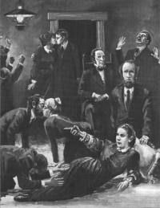

Después de que Elena Harmon recobró el conocimiento, permaneció confinada en su cama por varias semanas. Había perdido mucho peso, probablemente por lo menos debido en parte a la dificultad para alimentarla durante su prolongado coma - siendo que en esa época no existía equipo de alimentación intravenosa. Sin embargo, los fluidos que se le ponían en la boca pueden haber sido tragados por acción refleja.
Mejoró muy lentamente, y “su salud parecía estar hecha añicos por completo.” Más tarde, Elena sólo pudo asistir a la escuela un poquito; y ella dice que “me era casi imposible estudiar y retener lo que había aprendido.” Cuando asistió a la escuela, la mano le temblaba tanto que no podía progresar en su escritura; y cuando estudiaba, dice ella que “las letras del libro se me amontonaban, gruesas gotas de sudor me salían de la frente, y me mareaba y me ponía débil.” Su maestro le aconsejó que dejara la escuela hasta que su salud mejorara, y así lo hizo ella. Tres años más tarde, cuando tenía doce años, intentó ir a la escuela otra vez, pero su salud le falló una vez más y se vio obligada a dejar la escuela de modo permanente. Esto la desanimó mucho. Escribió:
“Cuando consideré mis esperanzas fallidas, y el pensamiento de que sería una inválida de por vida, me resistí a aceptar mi suerte y a veces murmuraba contra la providencia de Dios, que de esta manera me afligía.” 1
En otra ocasión, dice: “Me parecía estar separada de toda oportunidad de alcanzar la felicidad terrena, y que estaba condenada a continuos desengaños y continua mortificación.” 2
Los síntomas experimentados por pacientes que se recuperan de una severa lesión en la cabeza incluyen dolores de cabeza, mareos, depresión, lentitud en el pensar, y disminución de la concentración y la memoria — todos los cuales experimentó Elena, según ella misma cuenta. Ounsted, en su estudio de la epilepsia del lóbulo temporal en los niños, llegó a la conclusión de que “las dificultades sociales y escolares están muy extendidas entre los epilépticos de lóbulo temporal, aunque esté presente una inteligencia normal… Las dificultades sociales y escolares de niños con epilepsia del lóbulo temporal son mayores de lo que comúnmente se piensa.” 3
Jaime White dijo que, en la época de la primera visión de Elena, “su condición nerviosa era tal que no podía escribir, y dependía de alguien sentado cerca de ella en la mesa hasta para que le vertiera su bebida de la taza al platillo.” 4
Casi cincuenta años más tarde, reflexionando en el Review and Herald (Noviembre 25, 1884) sobre los efectos de su accidente, Elena escribió:
“Visité… el lugar donde había sufrido el accidente que me había convertido en inválida de por vida. Esta desgracia, que por un tiempo me pareció tan amarga y tan difícil de sobrellevar, ha demostrado ser una bendición disfrazada. El cruel golpe que frustró los goces terrenos fue el medio para que yo volviera mis ojos al cielo.”
En 1841, Elena asistió a una serie de conferencias dictadas por William Miller, pero ella sintió que no estaba lista para ser aceptada por Dios a causa de una falta de santificación. Elena dice que ella “cayó en un estado de melancolía, que aumentó hasta convertirse en desesperación.” 5 Permaneció en este estado por tres semanas, y, en completa desesperación, solía caer sobre su rostro:
“Pensé que la suerte del pecador condenado sería la mía…. Muchas veces deseé no haber nacido. Una completa oscuridad descendió sobre mí y no parecía haber salida de las sombras… Desde entonces, he pensado que muchos pacientes de asilos para locos fueron llevados allí por experiencias similares a la mía.” 6
En ese tiempo, y en ese estado de ánimo, Elena tuvo un sueño significativo, que fue probablemente la primera de sus muchas experiencias visionarias. En este sueño, ella vio un templo sostenido por una gran columna a la cual estaba atado un cordero sangrante. El temor sobrecogió a Elena mientras estaba cerca del cordero, y tuvo una sensación de vergüenza cuando vio que debía confesar sus pecados delante de los que ya lo habían hecho, y que parecían felices y esperando algún evento gozoso. Entonces sonó una trompeta, el edificio se estremeció, y los santos lanzaron un grito de triunfo. El templo brilló con intensidad impresionante, seguida por una terrible oscuridad en la cual Elena se encontró sola. Ella escribió: “El horror de mi mente no podría describirse. Me desperté, y pasó algún tiempo antes de que lograra convencerme de que aquello no era real. Ciertamente, pensé, mi suerte está echada.” 7
Poco después, tuvo otro sueño en el cual ella pensó que estaba sentada en profunda desesperación cuando “una persona de hermosa forma y semblante” le preguntó si deseaba ver a Jesús y que, si era así, lo siguiera. Fue conducida a una escalera empinada y se le dijo que mantuviera los ojos fijos mirando hacia arriba, porque si miraba hacia abajo, se marearía y se caería. Vio que, efectivamente, algunos habían caído a cada lado del camino. Entonces vio a Jesús, y “trató de protegerse de su penetrante mirada.” Pero Jesús puso su mano sobre la cabeza de ella y le dijo: “No temas.” Elena cayó postrada a Sus pies y vio escenas de gloria y belleza, mientras Jesús le sonreía. Luego, el guía la trajo de vuelta a las escaleras, dándole un cordón verde con el cual ella entraría en contacto con Jesús cuando así lo deseara.” 8
Ciertos rasgos de esta visión sugieren que puede haber sido un ataque en el lóbulo temporal. Primero, hay que recordar las circunstancias. Elena estaba desanimada, sintiendo que no estaba lista para ser aceptada por Cristo por su falta de santificación, y en profunda desesperación. Su sueño probablemente fue condicionado por su estado emocional y los problemas específicos que la preocupaban. En el sueño, sintió temor cuando se acercó al cordero, y más tarde vio la impresionante brillantez y luego la terrible oscuridad que siguió, en la cual ella estaba sola. Todo esto (temor, luz brillante, y oscuridad) se experimentan frecuentemente durante ataques al lóbulo temporal, como ocurre en muchas de las visiones de Elena. 9
En su segundo sueño registrado (1842), se le dijo que mantuviera los ojos mirando fijamente hacia arriba. Jesús la contempló con una mirada penetrante, y luego le dijo: “No temas.” Aparentemente, el temor era parte de su experiencia también, y sus ojos estaban fijos mirando hacia arriba - siendo ambos factores típicos durante los ataques epilépticos al lóbulo temporal. 10
Hay obvias similitudes entre este sueño y la visión mucho más prolongada que ella experimentó en diciembre de 1844. Poco después de su segundo sueño (mencionado en el párrafo anterior), Elena tuvo otra experiencia mientras participaba en una reunión de oración:
“Mientras oraba… quedé excluida de todo, excepto de Jesús y su gloria, y no supe nada de lo que estaba pasando a mi alrededor. Permanecí en este estado largo tiempo, y cuando me di cuenta de lo que pasaba a mi alrededor, todo me pareció glorioso y nuevo, como si todo estuviera sonriente y alabando a Dios.”
En el relato de Primeros Escritos, ella añadió: “Oleada tras oleada de gloria pasaba sobre mí, hasta que mi cuerpo se puso rígido.” 11 Esta parece ser su tercera experiencia visionaria registrada. Elena participó en el chasco de los Adventistas Milleristas, cuando Jesús no regresó en la primavera de 1843, y en la aún mayor desilusión del 22 de Octubre de 1844, cuando Jesús nuevamente no apareció.
Fue en Diciembre de 1844 cuando Elena experimentó una visión mientras estaba de rodillas orando junto con otras cuatro mujeres en la casa de un amigo. En esta visión, ella vio el viaje de los 144,000 santos sobre un camino estrecho y sinuoso: Algunos cayeron hacia el oscuro y malvado mundo que estaba debajo. Luego siguió una afirmación que ha causado considerable controversia en la iglesia:
“Era tan imposible para ellos regresar al camino nuevamente e ir a la ciudad, como para todo el mundo impío que Dios había rechazado. Cayeron uno tras otro a los lados del camino, hasta que oímos la voz de Dios como el estruendo de muchas aguas, que nos anunciaba el día y la hora de la venida de Jesús.”
Junto con la mayoría de los miembros del pequeño grupo que más tarde formaría la Iglesia Adventista del Séptimo Día, ella creyó, por años después del 22 de Octubre de 1844, que el tiempo de oportunidad se había cerrado. 12
Una semana más tarde, Elena experimentó otra visión en la cual ella vio las pruebas y la oposición a través de las cuales ella pasaría en su obra de relatar sus visiones a otros. Después de esto, nuevamente entró en un período de desolación porque no tenía los medios para sostenerse en este ministerio; ella “ansiaba la muerte.”
Durante una sesión de oración con amigos en la casa paterna, ella súbitamente sintió como si una bola de fuego se hubiese estrellado sobre su corazón; cayó al suelo y oyó a un ser santo decir: “Haz saber a los demás lo que te he revelado.”13 Después de esto, Elena Harmon fue fiel a la visión y se volvió más y más activa hablando a pequeños grupos de los que habían creído en el mensaje de la pronta venida de Cristo por segunda vez. El 30 de Agosto de 1846, se casó con el Anciano Jaime White, con el cual comenzó a trabajar en favor de los dispersos grupos Adventistas. Escribir, publicar, y viajar se convirtieron en una forma de vida para los White.
Elena continuó teniendo muchas de las así llamadas “visiones abiertas” mientras estaba despierta, entre 1844 y 1884; después, ella tuvo principalmente sueños proféticos, o visiones en la noche, hasta su muerte el 3 de Marzo de 1915. Por supuesto, es imposible obtener una descripción exacta del número total de experiencias visionarias que Elena tuvo, pero Jaime White aseguraba que, para 1868, ella había experimentado entre 100 y 200 visiones. 14 Entre 1868 y 1884, hay listadas como ochenta visiones adicionales; y casi sesenta sueños proféticos después de 1884 están enumerados en el Indice General de los Escritos de Elena G. de White, además de cuarenta y ocho que están clasificados como sin fecha segura. Arthur White ha dicho que “no se ha conservado ningún registro completo de todas las visiones que Elena Harmon recibió en las semanas y meses que siguieron a la primera revelación. Documentos contemporáneos indican que las revelaciones de aquellos primeros tiempos eran frecuentes. 15 Basándonos en todo esto, parece que Elena tuvo al menos 400 experiencias visionarias, y quizás muchas más, durante toda su vida.
¿Cómo se persuadió Elena Harmon de que las experiencias visionarias y sueños que ella había tenido venían directamente de Dios? Primero, probablemente, era la naturaleza de lo que vio - escenas en el cielo en las cuales ella habló con ángeles, habló con Cristo, y vio a Dios. Ella creyó que estaba recibiendo importantes mensajes y advertencias del cielo. Quizás más crucial al comienzo fue la influencia de los que estaban cerca de ella, que creyeron que sus experiencias y trances eran obra de Dios. Después de su segundo sueño en 1841, ella le confió a su madre las luchas por las que estaba pasando. Su madre simpatizó con ella y la animó a visitar al Anciano Stockman. Elena cuenta:
“Después de escuchar mi relato, puso sus manos afectuosamente sobre mi cabeza, diciendo con lágrimas en los ojos: ‘Elena, eres sólo una niña. La tuya es una experiencia de lo más singular para alguien de tu tierna edad. Jesús debe estar preparándote para alguna obra especial.’” 16
La primera oración en público de Elena fue una experiencia tan emotiva para ella que perdió la noción de lo que sucedía a su alrededor.
“Cuando caí al suelo, algunos de los presentes se alarmaron mucho y estuvieron a punto de salir corriendo en busca de un médico, pensando que algún súbito y peligroso malestar me había atacado; pero mi madre les dijo que me dejaran sola, porque era claro para ella y para los otros experimentados cristianos que era el poder maravilloso de Dios lo que me había postrado.” 17
Elena estaba profundamente impresionada por la excitación religiosa y emocional de su congregación Metodista local, incluyendo los trances y los desmayos. 18 En Jaime White y José Bates, ella también encontró apoyo para su creencia en el origen divino de sus visiones. 19 A mediados del siglo diecinueve, hubo otros en la comunidad de la fe Adventista que aseguraban, o se reconocía que tenían, visiones de Dios. Elena menciona cierto número de ellos en sus bosquejos autobiográficos. 20
No hay duda de que Elena G. de White afirmaba, y sin duda llegó a creer firmemente, que ella recibía visiones y mensajes directamente de Dios. Hoy día, puede que uno se pregunte por qué Elena G. de White fue tan fácilmente aceptada por otros como profetisa. Durante ese período de la historia, los profetas y las profetisas eran bastante comunes tanto en Inglaterra como en los Estados Unidos. En esta época, José Smith fue aceptado como profeta, y los misioneros mormones aseguraban que su iglesia tenía “el espíritu de profecía.” Mary Baker Eddy, también contemporánea de Elena G. de White, llegó a ser la fundadora y la dirigente espiritual de los Cientistas Cristianos. Billington ha señalado que, entre 1830 y 1850, “las predicadoras eran populares. Las visiones y los trances se aceptaban con facilidad.” 21
Arturo White, nieto de Elena, está de acuerdo en que las manifestaciones físicas de las experiencias visionarias de Elena - inusuales e inexplicables como eran para esa generación - contribuyeron a su aceptación como de origen sobrenatural. “La manera misma en que se dieron las visiones constituía fuerte evidencia, entre muchas, que decidió el asunto en las mentes de la mayoría de los testigos.” 22
Hubo un período al comienzo del ministerio de Elena G. de White en el cual su aceptación casi unánime era de naturaleza bastante probatoria. Ella ciertamente no era vista como autoridad. En 1851, Jaime White escribió en el Review and Herald (21 de Abril de 1851):
“Por lo tanto, todo cristiano tiene el deber de considerar la Biblia como la perfecta regla de fe y conducta… No está en libertad de volverse de ellas [las Escrituras] para aprender cuál es su deber por medio de alguno de los dones. Decimos que, en el momento en que lo haga, pone los dones en el lugar erróneo, y asume una posición extremadamente peligrosa.”
En el mismo número del Review, añadió:
“La Palabra de Dios es una roca eterna. En ella podemos apoyarnos con confianza en todo momento. Aunque el Señor dé sueños, dirigidos generalmente a los individuos que los tienen, para consolar, corregir, o instruir en pruebas o peligros extremos, el suponer que El se propone en general guiar en los deberes generales por medio de sueños, no está de acuerdo con las Escrituras, y es muy peligroso.”
Cuatro años más tarde, Jaime White escribió lo siguiente:
“Hay una clase de personas que están decididas a que la Review y sus dirigentes hagan de las visiones de la Sra. White una prueba de doctrina y fidelidad… ¿Qué tiene que ver la Review con las visiones de la Sra. W.? Los pensamientos publicados en estas columnas son todos tomados de las Sagradas Escrituras. Ningún redactor de la Review se ha referido jamás a ellas [las visiones] como autoridad sobre ningún punto.” 23
Veintiocho años más tarde (en 1883), el Anciano G. I. Butler, en aquel entonces presidente de la Conferencia General de los Adventistas del Séptimo Día, escribió lo siguiente:
“Nuestros enemigos hacen un gran esfuerzo para hacer ver que nosotros consideramos a las visiones como prueba de fidelidad. Hacerlo sería de lo más absurdo e imposible, aun si quisiéramos. Con gente en todas partes del mundo abrazando nuestros puntos de vista, gente que nunca vio ni oyó hablar de la Hermana White, ¿cómo podríamos hacer de las visiones una prueba de fidelidad? … Ellos afirman que hay muchos entre nosotros que no creen en las visiones. Esto es cierto; pero éstos están en nuestras iglesias y no son desfraternizados. Han asegurado… que los Ancianos Smith, Canright, y Gage no creen en las visiones; pero todos ellos son miembros de nuestras iglesias, dos de ellos tienen credenciales de ministros, y uno ocupa posiciones muy importantes… No, nosotros no hacemos de las visiones ninguna prueba, y nunca lo hemos hecho.” 24
Neal Wilson, el actual [en 1985] presidente de la Conferencia General de los Adventistas del Séptimo Día, expresó básicamente la misma actitud en una reciente entrevista. “Cuando llegamos al punto de si uno tiene que creer en Elena G. de White hasta uno u otro punto, o aceptar las visiones como reales, o simplemente la imaginación o la repetición de lo que alguna otra persona dijo - que uno tiene que creer que estas cosas eran visiones reales para ser Adventista del Séptimo Día o experimentar la salvación - esta iglesia nunca ha asumido esta posición. Ojalá que nunca lo haga. Haría gran violencia al don de Dios que le ha sido dado a la iglesia. Este don nunca fue dado para semejante propósito en absoluto.” 25
Con el correr del tiempo, Elena G. de White fue aceptada más y más en la Iglesia Adventista del Séptimo Día como una persona con autoridad, y su influencia vino a ser la de un profeta verdadero, aunque ella misma rehusaba describirse a sí misma como tal - prefiriendo el título “La Mensajera del Señor.” Ella creía que su obra incluía “mucho más de lo que la palabra ‘profeta’ significa.” 26
Lo que ella realmente creía acerca de la importancia de, y la participación divina en, su obra queda claro a partir de las siguientes afirmaciones:
“Los Testimonios son del Espíritu de Dios, o del diablo. Al alinearos en combate contra los siervos de Dios, vosotros estáis haciendo la obra o de Dios o del diablo.” 27
“Si tratáis de hacer a un lado el consejo de Dios para adaptarlo a vosotros mismos, si disminuís la confianza del pueblo de Dios en los testimonios que El les ha enviado, os rebeláis contra Dios tan ciertamente como lo hicieron Coré, Datán, y Abiram…. En estas cartas que yo escribo, en los testimonios que yo doy, presento a vosotros lo que el Señor me ha presentado a mí. Yo no escribo ni un solo artículo en el periódico expresando meramente mis propias ideas. Ellas son lo que Dios ha abierto delante de mí en visión - preciosos rayos de luz que dimanan del trono. Esto es cierto concerniente a los artículos en nuestros periódicos y en los muchos tomos de mis libros.” 28, 29
¿Por qué llegó Elena a estas conclusiones en relación con la naturaleza y la importancia de su obra? Quizás fue un proceso gradual, principalmente debido a la influencia y la presión de todos los que estaban alrededor de ella y que creían que sus experiencias visionarias tenían que ser de origen sobrenatural, divino. Este proceso se inició con sus primeros sueños y continuó hasta su última visión. Es bastante comprensible que Elena se persuadiera por completo de que estos sueños y visiones eran todos revelaciones directas, divinas, de manera que ella pudo finalmente decir (y creer): “En tiempos antiguos, Dios habló a los hombres por la boca de los profetas y los apóstoles. En estos tiempos, El les habla por medio de los Testimonios de Su Espíritu.” 30
Sin embargo, en vida de Elena, hubo algunos que pusieron en duda el origen divino de sus visiones. en 1847, Jaime White publicó una carta de “un amado hermano” en relación con las visiones de Elena.
“No puedo aceptar las visiones de la hermana White como si fueran de inspiración divina, como Ud. y ella creen que son. Pero no sospecho ni la más mínima sombra de deshonestidad en ninguno de Uds. dos en este asunto… Creo que lo que ella y Ud. consideran visiones del Señor son sólo ensueños religiosos, en los cuales la imaginación de ella vuela sin control sobre temas en los cuales ella está profundamente interesada. Mientras está absorta en estos ensueños, ella pierde contacto con todo lo que ocurre a su alrededor. Los ensueños son de dos clases, los pecaminosos y los religiosos. Los de ella son de ésta última clase.” 31
Otros sugieren causas mentales o físicas. Elena menciona el mesmerismo (una forma de hipnosis) como una de las causas o explicaciones que alguien alegó acerca de sus visiones. Hasta a ella misma se le ocurrió esta posibilidad. 32
Otra explicación que se ha dado de sus visiones es la histeria, y esta sugerencia se repitió durante toda su vida. Es interesante notar que Elena diagnosticó que uno de los miembros de su iglesia sufría de histeria. Ella escribió:
“Querida Hermana F., Ud. tiene una imaginación enferma… Ciertamente, Ud. no solamente se está haciendo daño a sí misma, sino que se lo está haciendo a otros miembros de su familia, y - especialmente a su madre… La mente de ella está siendo desequilibrada por los frecuentes ataques de histeria que se ve obligada a presenciar.” 33
Al principio, había compañeros de trabajo de Elena y Jaime que rechazaban el origen sobrenatural de las visiones de Elena. Entre éstos se encontraba Isaac Wellcome, que fue bautizado por Jaime White en 1844 y estaba activo en el Movimiento del Segundo Advenimiento. El escribió:
“Elena G. Harmon… era extrañamente activa en cuerpo y mente…cayendo al piso… (recordamos que la sostuvimos dos veces para evitar que cayera al piso)… en reuniones, ella hablaba con gran vehemencia y rapidez hasta que caía al suelo, cuando, como afirmaba, se le mostraban maravillosas visiones del cielo y lo que estaba ocurriendo allí. Ella afirmaba haber visto que Cristo había cesado en su oficio de mediación y asumido el de Juez, había cerrado la puerta de la misericordia, y estaba borrando nombres del libro de la vida… La vimos en Poland, Portland, Topsham, y Brunswick durante el comienzo de su carrera, y a menudo la oímos hablar, y varias veces la vimos caer, y la oímos relatar las maravillas que ella decía que su Padre celestial le permitía ver. Sus visiones sobrenaturales o anormales no fueron entendidas enseguida como visiones, sino como imágenes espirituales de cosas invisibles, que eran bastante comunes entre los Metodistas… Estas visiones no eran sino los ecos de las predicaciones del Anciano [Joseph] Turner y otros, y nosotros las consideramos como el producto de la sobreexcitada imaginación de su mente, y no como hechos.” 34
Jacob Brinkerhoff y su hermano W. H. Brinkerhoff (que fue ordenado por Jaime White), eran activos en la obra de la Iglesia Adventista del Séptimo Día en el período de 1860-1865. Jacob escribió en 1884:
“La Sra. White tiene una gran reputación entre ellos como dirigente… en parte por su afirmación de que era divinamente inspirada. Poco después del chasco de 1844, ella tuvo lo que se llamó su primera visión. Aquéllos fueron tiempos de prueba para la fe del pueblo Adventista, sin duda; y ella era muy joven en aquel tiempo, y de muy precaria salud…. En la excitación del momento, y mientras su cuerpo estaba en esta débil condición, su mente parecía separarse de su cuerpo, y caer en trance, en el cual la mente continúa activa, y forma conceptos de opiniones preconcebidas, a causa de la excitación del momento o las circunstancias presentes. En ese tiempo la experiencia del pueblo Adventista era tema de interés entre ellos, y en las visiones o trances de ella, su mente avanzaba sobre el mismo tema como una consecuencia natural…. No nos sorprende que sus visiones fuesen consideradas, por ella y por los que estaban asociados con ella, como revelaciones del Señor. Tales fenómenos no ocurren a menudo en la naturaleza; y en un tiempo en el cual varios fanatismos se atribuían a la obra de Dios, no es sorprendente que esto ocurriera. Estando completamente absorta en sus visiones y experiencia religiosa, su mente, mientras continuaba en trance, funcionaba en la misma dirección mientras ella estaba en un estado insensible. Un trance es un estado de insensibilidad; catalepsia; éxtasis… Los que de algún modo están familiarizados con la historia de las visiones de la Sra. White han leído que una afirmación principal en favor de su inspiración divina es la de que ella es perfectamente insensible; pero esto sólo corrobora nuestra posición de que las visiones sólo se producen por un estado no saludable y no natural de su cuerpo y de su mente.” 35
Casi parece como si Brinkerhoff iba a llamar a esta condición epilepsia del lóbulo temporal. Pero se detuvo justo antes de hacerlo; el término todavía no había sido acuñado. Poco después añade en su documento: “Pasan por alto el hecho de que ellas (las visiones) puede que no sean inspiradas ni por Dios ni por Satanás, sino que pueden ser solamente humanas, o de su propia mente, la cual posición adoptamos como verdadera en cuanto a la fuente.”
En 1887, Dudley Canright atribuyó a su herida en la cabeza la causa de sus visiones:
“A la edad de nueve años, ella recibió un terrible golpe en el rostro, que le rompió la nariz y casi la mata. Estuvo inconsciente por tres semanas. Este impacto en su sistema nervioso era la verdadera causa de todas las visiones que tuvo después.”
En 1919, Canright específicamente sugirió la epilepsia como la causa. Es significativo que todos los diagnósticos sintomáticos aplicados durante su vida a sus experiencias visionarias están cubiertas por la en aquel entonces desconocida entidad de epilepsia del lóbulo temporal. 36
El Dr. William Sadler, que conocía bien a Elena G. de White, escribió en 1912:
“No es raro que personas en trance cataléptico se imaginen que están viajando a otros mundos. De hecho, los relatos maravillosos de sus experiencias, que ellos describen después de que estos ataques catalépticos terminan, son tan singulares y maravillosos que sirven de base para fundar nuevas sectas, cultos, y religiones…. Es un interesante estudio en psicología notar que estos mediums en trance siempre ven visiones en armonía con sus creencias teológicas…. Tarde o temprano, casi todas estas víctimas de trances y catalepsia nerviosa llegan a creerse mensajeros de Dios y profetas del cielo; y sin duda la mayoría de ellos son sinceros en esta creencia. No entendiendo ni la fisiología ni la psicología de sus aflicciones, sinceramente llegan a considerar sus peculiares experiencias mentales como algo sobrenatural, mientras que sus seguidores creen ciegamente cualquier cosa que estas personas enseñan a causa del supuesto carácter divino de estas así llamadas revelaciones.” 37
En 1906, Sadler había escrito a Elena una carta de nueve páginas como respuesta a una invitación de ella de que cualquiera que tuviera “perplejidades y cosas graves en su mente en relación con los testimonios que yo he transmitido, especifique cuáles son sus objeciones y críticas.” 38 Arthur L. White ha publicado extractos de la larga carta de Sadler, enumerando las preguntas que Sadler hace.
Los doctores Gregory Holmes y Delbert Hodder presentaron un documento titulado “Elena G. de White y la Iglesia Adventista del Séptimo Día: ¿Visiones o Ataques Complejos Parciales?” en una reunión sobre neurología en Toronto en Mayo de 1981. El documento fue resumido en el Journal of Neurology como sigue:
“La Iglesia Adventista del Séptimo Día nació en el período que siguió al ‘Gran Chasco’ de 1844. La principal figura en la formación de esta prominente denominación protestante fue Elena G. de White. Sus escritos de 100,000 páginas sólo son superados por la Biblia en la determinación de doctrina eclesiástica para millones de miembros por todo el mundo. Elena G. de White fue considerada como ‘Profeta de Dios’, que recibió instrucciones y dirección por medio de visiones sobrenaturales, que continúan proporcionando evidencia, para la mayoría de los Adventistas, de su inspiración divina.
“A la edad de nueve años, Elena G. de White sufrió una severa herida en la cabeza. Después de que se recuperó, su personalidad cambió y ella se volvió introspectiva, extremadamente moralista, y religiosa, y se convirtió en una ávida lectora y prolífica escritora. A la edad de 17 años, Elena G. de White tuvo su primer “ataque,” que ella interpretó como una “visión.” Las visiones se caracterizaban por auras ocasionales, un estado alterado de la conciencia con la mirada fija y los ojos en blanco, automatismos generales, repeticiones en el hablar, alucinaciones visuales y auditivas, y letargo y amnesia post-visión en cuanto a los eventos que ocurrían durante la visión.
“Basados en la historia del trauma en la cabeza, los cambios de personalidad, y las descripciones de las visiones, sugerimos que Elena G. de White sufría de ataques complejos parciales.” 39

También, un informe sobre el documento fue publicado en el Toronto Star el 23 de Mayo de 1981, y se publicó una versión por Hodder en Evangelica en Noviembre de 1981.
Los ataques complejos parciales son típicos de una forma de epilepsia, que afecta al sistema límbico del cerebro, incluyendo los lóbulos temporales. Hubo un tiempo en que la mayoría de la gente creía que la epilepsia significaba espasmos musculares y convulsiones con probable espuma en la boca y mordedura de la lengua. Esta clase de epilepsia ciertamente ocurre, pero también hay otros tipos de epilepsia. Todas las formas de epilepsia se deben a una disfunción de las células nerviosas del cerebro. Esta disfunción puede causar reacciones anormales en la actividad muscular an grandes áreas del cuerpo, pero hay muchos otros sistemas y funciones que pueden ser afectados, especialmente en la epilepsia de lóbulo temporal. Éstas incluyen las funciones endocrinas, el pulso, la respiración, la conciencia, los pensamientos, la memoria, los sueños, el habla, la escritura, el estado de ánimo, la conducta, el temperamento, la sexualidad, y otras.
Los síntomas específicos que manifieste un paciente epiléptico dependen de la ubicación de las neuronas dañadas (incluyendo en qué mitad del cerebro se encuentran), la severidad y la extensión del daño a las células nerviosas afectadas, y cuáles otras neuronas distantes son influídas por la disfunción del foco primario en el cerebro. Los síntomas resultantes de la lesión cerebral original pueden no ser evidentes por muchos años. 40 Esta demora puede deberse a los efectos finales del proceso prolongado de los cambios en los tejidos, que siguen a la lesión cerebral. Courville 41 cita a Earl y otros, informando que en el 31.2 por ciento de los casos clínicos de epilepsia psicomotora hubo una historia de lesión craneocerebral postnasal. Gomes 42, que analizó 3636 casos de epilepsia de lóbulo temporal, pudo determinar la etiología [causa] en el 64 por ciento de los pacientes. De éstos, la lesión fue la causa en el 38 por ciento de los casos.
Los ataques epilépticos ocurren periódicamente, pero su frecuencia puede variar grandemente. También, los ataques pueden ser precipitados por factores internos y externos, tales como la ansiedad, la depresión, la fatiga, y el sueño; en algunos tipos de epilepsia, es posible que los pacientes desencadenen un ataque mediante la hiperventilación (intencional o durante el stress), parpadeando frente a luces brillantes, escuchando un súbito ruido fuerte, aplicando presión sobre las arterias carótidas en el cuello, y en algunos individuos, hasta leyendo. Algunos pacientes pueden tener una premonición de que viene un ataque, y a veces es posible que un paciente haga abortar el ataque. Elena pudo resistir la llegada de una visión por lo menos una vez y no pudo hablar después de esto por casi veinticuatro horas. 43
Elena no era consciente de lo que la rodeaba durante una visión y más tarde no recordaba lo que había tenido lugar a su alrededor durante la visión; pero podía recordar lo que había visto y experimentado en la visión misma. Esto es típico de un ataque complejo parcial en la epilepsia de lóbulo temporal.
Se afirmaba que Elena no respiraba durante sus visiones, pero que nunca se ponía cianótica. (Pero con frecuencia hablaba mientras estaba en visión - una actividad para la cual necesitaba aire.) En 1874, George I. Butler apoyó esto cuando dijo que su “rostro conserva su natural color, y la sangre circula como de costumbre.” En los informes más detallados de las visiones de Elena, se ha observado que, cuando ella salía de una visión, experimentaba “una profunda inhalación, seguida por otra después de como un minuto, y muy pronto la respiración normal se reanudaba.” La respiración de Elena puede haber sido casi imperceptible. A causa de la reducción en la respiración normal, no es extraño que algunos de los presentes llegaran a la conclusión de que Elena no respiraba en absoluto. 44 Se ha informado, en relación con la epilepsia de lóbulo temporal, que la respiración puede en realidad ser detenida por breves períodos (apnea), y enlentada después. Entre los síntomas de ataques psicomotores, Lennox lista el hecho de que la respiración en estos pacientes puede variar de la hiperventilación a la apnea (ausencia de respiración). La ausencia total de respiración podía continuar sólo por un tiempo muy corto, pero la respiración casi imperceptible podía durar por períodos largos. 45 A veces, este aparente “no respirar” durante las visiones se argumentó como prueba de que las visiones debían ser de origen sobrenatural.
El automatismo (acciones automáticas de las cuales el paciente no es consciente) es un síntoma común en la epilepsia de lóbulo temporal. Y Elena manifestaba esto retorciendo sus manos; haciendo lentos y graciosos movimientos con los hombros, los brazos, y las manos; y caminando hacia adelante y hacia atrás mientras estaba en visión. Esta manifestación peripatética parece significativa puesto que las más notables hazañas de automatismo en epilépticos de lóbulo temporal ocurren en esta área.
En 1888, Hughlings Jackson informó de 50 casos de epilepsia que manifestaron una aura o estado de ensueño, incluyendo algunos más bien extremos ejemplos de automatismo. Estos le ocurrieron a un médico que era paciente de Jackson, que en una de sus experiencias, viajaba en un tren urbano e iba a bajarse en la cuarta estación. Recordaba haber pasado la segunda estación, pero lo siguiente que supo era que estaba de pie en la entrada a su casa, buscando la llave de la puerta. Se había bajado del tren en la estación correcta, entregado su boleto en la entrada, caminado media milla, y cruzado varias calles hasta su casa - y no recordaba ninguna de estas cosas. Había sido una conducta automática que no recordaba. 46 Es interesante que otro de los pacientes de Jackson se refiriera a sus experiencias de ataques como “visiones.” Los sonámbulos pueden abrir puertas y subir escaleras con seguridad pero no recuerdan sus acciones; esto es automatismo.
¿Qué observaron en realidad los que estuvieron presentes durante las visiones de Elena? Por fortuna, hay disponible cierto número de informes bastante detallados de algunos de los que estaban presentes cuando Elena tenía una de sus experiencias visionarias, incluyendo a Jaime White y J. N. Loughborough, que afirmaban haberla visto en visión como cincuenta veces. Arthur L. White nos ha proporcionado un resumen completo de los relatos de estos testigos presenciales.
Inmediatamente antes de una visión, tanto la Sra. White como otros en la habitación tenían una profunda sensación de la presencia de Dios.
Después de que la visión comenzaba, la Sra. White lanzaba una exclamación de ¡Gloria! o ¡Gloria a Dios!, que a veces se repetía.
Había pérdida de fuerza física.
Una fuerza sobrenatural era entonces evidente.
No había respiración, pero el corazón continuaba latiendo normalmente, y el color de las mejillas era natural. Las pruebas más críticas no pudieron revelar ninguna alteración en el sistema circulatorio.
A veces había exclamaciones que indicaban la escena que se estaba presentando.
Los ojos estaban abiertos, no con una mirada vacía, sino como si estuviesen mirando algo atentamente.
La posición podía variar. A veces ella estaba sentada; a veces, reclinada; a veces caminaba por la habitación y hacía graciosos gestos mientras hablaba de las cosas presentadas.
Había absoluta inconsciencia de lo que ocurría alrededor de ella. No veía, ni oía, ni sentía, ni percibía de manera alguna los alrededores o lo que sucedía.
La terminación de la visión era indicada por una profunda inhalación, seguida por otra después como de un minuto, y muy pronto la respiración normal se reanudaba.
Inmediatamente después de la visión, todo parecía muy oscuro.
Después de un tiempo muy corto, se recobraban las fuerzas y las facultades. 47, 48
Loughborough también informa sobre una visión en 1846 que Elena Harmon experimentó en presencia de Joseph Bates. En esta visión, ella habló de lo que parecían ser planetas. Loughborough cita a la Sra. Truesdale, que estaba presente en la reunión:
“Pronto notamos que ella era insensible a las cosas terrenales….Después de contar en voz alta las lunas de Júpiter, y poco después las de Saturno, hizo una hermosa descripción de los anillos de éste último. Luego dijo: “Los habitantes son personas altas, majestuosas, bien diferentes de los habitantes de la tierra. El pecado nunca ha entrado allí.” 49

En Primeros Escritos, Elena también informa sobre su visión planetaria, en la cual vio a Enoc entre los habitantes de uno de los planetas. 50
Comentando posteriormentelo que Elena G. de White decía que había experimentado en su primera visión, Arthur White añade una clara descripción de las características esenciales de su experiencia, y las resume como sigue:
“Es claro que a ella le parecía estar viendo, sintiendo, oyendo, obedeciendo, y actuando, empleando sus facultades ordinarias, cuando en realidad no lo estaba; pero era de esta manera vívida, aparentemente por medio de la utilización de los órganos normales de los sentidos, que las verdades y la información eran impresionadas sobre su mente. Ella contó o escribió esto más tarde con sus propias palabras.” 51, 52
Cuando los registros existentes de los detalles de las visiones de Elena G. de White se comparan con los síntomas de los ataques complejos parciales en la epilepsia de lóbulo temporal, se descubre una notable similitud. Daly 53 menciona que “los ataques parciales complejos consisten de una alteración del contenido del consciente….las alucinaciones de los ataques parciales complejos se ‘forman’, en el sentido de que constituyen una experiencia sensorial reconocible y plenamente desarrollada que, en casos raros, puede, de hecho, ser la memoria de una experiencia real. Un punto importante en la naturaleza de este contenido alterado del consciente es que constituye una intrusión sobre la corriente fluida de la realidad del paciente… No importa cuán vívida, compleja, o ‘real’ sea la experiencia ictal [ataque], el paciente la reconoce como una experiencia impuesta sobre él. Su consciente está ‘dividido,’ y él todavía puede continuar siendo el observador objetivo, el espectador que presencia estos curiosos eventos.”
La experiencia del ataque se inicia generalmente con un así llamado síntoma, o aura, que a menudo envuelve sensaciones epigástricas u otras manifestaciones automáticas. Puede haber una sensación de temor o la alucinación de oler algo, que Elena experimentó cierto número de veces como el olor a rosas, o simplemente “flores.” Ella olía la fragancia de violetas, y en otra ocasión ella estaba “recogiendo las flores y disfrutando de su fragancia.” 54 En otra ocasión, “ella se arrodilló al lado de la cama, y antes de que se hubiera ofrecido la primera palabra de petición, sintió que la habitación se había llenado con la fragancia de rosas. Levantando la vista para ver de dónde venía la fragancia, vio la habitación inundada de una luz suave y plateada.” 55
Arthur White, describiendo una experiencia visionaria de Elena en 1901en la cual había “una dulce fragancia, como de hermosas flores,”añadió: “Ella sabía lo que significaba.” Aparentemente, era parte frecuente de las visiones de Elena el notar esta fragancia. Ella también veía a menudo una luz brillante al comienzo de sus visiones, una luz que inundaba la habitación, o aparecía en varias intensidades, colores, y formas. Ver luces brillantes y varios colores es muy común en los ataques complejos parciales de los epilépticos. Elena ha dicho:
“Bien, mientras estaba orando y haciendo mis peticiones, había, como la ha habido cien veces o más, una suave luz que se movía alrededor de la habitación, y una fragancia como de flores, de un hermoso olor a flores.” 56
Si uno toma en serio la afirmación “cien veces o más,” la luz que se movía en círculos y la fragancia de flores deben haber estado presentes en casi todas las visiones. La alucinación de música (también asociada con la luz brillante) estaba presente en las experiencias de Elena, 57 como también se encuentra en los ataques de epilepsia de lóbulo temporal.
El evento principal en las visiones de Elena es también comparable con lo que ocurre durante ataques complejos parciales, ya sean breves o prolongados. Williams ha resumido las características básicas de estos ataques como sigue:
“todo reconocimiento, por simple que sea, se basa en la memoria, como ocurre con todo movimiento, y hay simplemente un patrón crecientemente complejo del uso de experiencias pasadas, desde el reconocimiento de la forma visual o auditiva más simple hasta el manejo intelectual de un elaborado evento perceptual.” 58
Gastaut observó que los pensamientos que ocupaban la mente del paciente antes del ataque podrían muy bien ser el sujeto del ataque mismo. 59 Aparentemente, tal es el caso frecuente, o quizás siempre, de las visiones de Elena.
En 1982, Gloor y otros, discutiendo los resultados de estimulaciones cerebrales en sus pacientes de epilepsia de lóbulo temporal, se expresaron de manera similar. La idea de que:
“estimular a ‘quién’ parece más importante que estimular ‘dónde’ en el sistema límbico es comprensible porque las respuestas reflejan al mismo tiempo el papel funcional del área estimulada y la pasada experiencia individual del paciente.” 60
El Diagnóstico de M. G. Kellogg
El Dr. M. G. Kellogg escribió esta evaluación de las visiones de Elena G. de White en una carta fechada el 3 de Junio de 1906 y dirigida a su hermano más joven, John Harvey Kellogg:
“En 1868, después de conversar con el Dr. Trall, comencé a sospechar que las visiones de la Sra. White podrían no ser lo que habíamos supuesto, y desde ese momento en adelante he estado estudiando tanto a la Sra. White como a sus visiones, sueños, y testimonios….
“He visto a la Sra. White cuando estaba en visión un buen número de veces entre 1852 y 1859, y en cada caso ella simplemente estuvo en estado de catalepsia. En cada caso, ella de repente sufría un ataque, caía al suelo inconsciente, y permanecía inconsciente durante todo el tiempo que el ataque duraba; todas las funciones vitales se reducían a su punto más bajo compatible con la vida; el pulso casi se detenía y no pocas veces la respiración era tan leve que era imperceptible excepto cuando pronunciaba frases cortas; las pupilas se dilataban mucho, el sentido del oído se embotaba; de hecho, todos sus sentidos quedaban tan embotados que no veía, ni sentía, ni oía; de hecho, estaba completamente inconsciente, y sin embargo su mente permanecía agudamente activa, la acción era automática y completamente involuntaria, la visión entera era un conglomerado mental de conceptos, escenas, meditaciones, y sugerencias previos, tan vívidamente reproducidos en su mente que, para ella, eran una realidad viviente. La catalepsia toma muchas formas en sus varias víctimas, pero en su caso se producía alguna fase de todas las formas. He visto muchos casos así. La descripción que la Sra. L. M. Hall hace de la condición de la Sra. White en visión está de acuerdo con la mía.”
Visiones Prolongadas
Lennox ha señalado que los ataques que duran varias horas pueden ocurrir una o dos veces al año, y que mientras más frecuentes son los ataques, más probable es que sean de corta duración. 61 Los ataques complejos parciales generalmente duran desde unos pocos segundos hasta varios minutos, pero también pueden durar horas, y raras veces, días. Arthur White dijo, en relación con la duración de las visiones de Elena:
“Mientras que algunas de las visiones eran de naturaleza muy prolongada, durando a veces más de una hora, y en una ocasión cuatro horas, hubo otras veces en que las visiones eran muy breves… sólo unos pocos minutos, o en algunos casos, segundos.” 62
Los ataques epilépticos de lóbulo temporal prolongados y que duran hasta varios días pueden clasificarse como status epilepticus complejos parciales. Tales ataques prolongados pueden en realidad consistir de muchos ataques cortos que ocurren en tan rápida sucesión que parecen uno sólo, especialmente para un observador no adiestrado. Es también posible tener un período de confusión mental de larga duración después de un ataque, que, nuevamente, puede parecer como una continuación del ataque. Si se conocieran más detalles acerca de las visiones de tres y cuatro horas de Elena G. de White, podría hacerse responsablemente un diagnóstico definitivo. 63
Cuando termina un ataque complejo parcial, el paciente puede que pase por un breve período de agotamiento y algo de automatismo, nada de lo cual el paciente recuerda más tarde. Gradualmente, la conciencia de sí mismo y el consciente regresan; ésta era también la experiencia de Elena. Si la visión había de ser escrita, ésto no podía hacerse sino hasta que la persona se había recuperado del ataque. Y cuando escribía la visión, el paciente completamente consciente podía también interpretarla, añadiéndole o quitándole. Con una compulsión para escribir, tal relato podía resultar bastante extenso.
La mayoría de los pacientes en estado epiléptico sufren del tipo convulsivo, pero entre el 25 y el 30 por ciento tienen ataques complejos parciales que son no convulsivos. En este último grupo, “no se ha informado todavía de ninguna evidencia de deterioro intelectual permanente.” 64, 65, 66. El estado epiléptico [status epilepticus] convulsivo y generalizado se ha observado en la epilepsia severa, mientras que es raro en la variedad parcial compleja.
Se ha llamado recientemente la atención al hecho de que, si un paciente experimenta un ataque prolongado de status epilepticus, esto claramente resultará en un serio deterioro de las facultades mentales, y que, por lo tanto, Elena G. de White no puede haber sido epiléptica. Este argumento se basa en una incomprensión de la diferencia entre la epilepsia convulsiva (como la severa) y el tipo no convulsivo (como la epilepsia de lóbulo temporal).
El status epilepticus del tipo convulsivo es una verdadera amenaza, no sólo a causa de su efecto deteriorador sobre las facultades mentales del paciente, sino porque las rápidas y prolongadas contracciones musculares producen serios disturbios metabólicos complejos que ponen en peligro la vida misma. 67 Tan graves son estos ataques convulsivos prolongados que se les debe poner fin tan pronto como sea posible por medio de inyecciones de un fuerte sedante para evitar daño al cerebro. Elena no experimentaba ninguna de estas consecuencias de sus visiones prolongadas porque sus ataques eran del tipo no convulsivo y del tipo complejo parcial.
Referencias:
- 1
-
E. G. White, Testimonies for the Church, 13.
- 2
-
White and White. Life Sketches, 136.
- 3
-
van der Zwan, “Late Results from Prolonged Traumatic Unconsciousness,” in The Late Effects of Head Injury (138-142); Ounsted, “Social and Schooling,” in Biological Factors in Temporal Lobe Epilepsy, 109-123.
- 4
-
James White, “Life Incidents, in Connection with the Great Advent Movement” 272-273, in F. D. Nichol, Ellen G. White and Her Critics (Washington, D.C.: Review and Herald Publishing Association, 1951). 53.
- 5
-
White and White, Life Sketches, 153. Véase también E. G. White, Spiritual Gifts 2:15-16.
- 6
-
E. G. White, Testimonies for the Church 1:25-27.
- 7
-
Ibid., 28-29; idem, Spiritual Gifts 2:16-18.
- 8
-
E. G. White, Testimonies for the Church, 1:25-27; idem. Spiritual Gifts 2:19.
- 9
-
Ellen G. White, Early Writings, (I 85 1; reprint, Washington, D. C.: Review and Herald Publishing Association, 1945), 12, 78-8 1; D. D. Daly, “Ictal Clinical Manifestations of Complex Partial Seizures, - in Advances in Neurology ed. J. K. Penry and D. D. Daly (New York: Raven Press, 1975), 11:57-80.
- 10
-
E. G. White, Early Writings, 79-80.
- 11
-
Ibid., 12.
- 12
-
“Letter from Sister Harmon,” The Day Star, 24 Jan. 1846, pp. 31-32; James White, A Word to the Little Flock (pamphlet), 1847; Ellen Harmon, To the Remnant Scattered Abroad (broadside), April 6, 1846; Ellen G. White, Selected Messages from the Writings of Ellen G. White (Washington, D. C.: Review and Herald Publishing Association, 1958), 2:63.
- 13
-
Ellen G. White, Life Sketches of Ellen G. White (1848; reprint, Mountain View, California: Pacific Press Publishing Association, 1915, 69-7 1.
- 14
-
D. F. Neufeld, Seventh-day Adventist Encyclopedia 1380-138 1.
- 15
-
Comprehensive Index to the Writings of Ellen G. White (Mountain View, California: Pacific Press Publishing Association, 1963), 3:2978-2984; Arthur L. White, Ellen G. White Messenger to the Remnant (Washington, D. C.: Review and Herald Publishing Association, 1969), 29.
- 16
-
J. White and E. G. White, Life Sketches, 157-158.
- 17
-
E. G. White, Life Sketches of Ellen G. White, 38.
- 18
-
J. White and E. G. White, Life Sketches, 139-140; E. G. White, Spiritual Gifts (Battle Creek, Michigan: James White, 1858), 2:28-29.
- 19
-
James White, A Word to the Little Flock (May 1847; facsimile reproduction, Washington, D. C.: Review and Herald Publishing Association, 1958), 13.
- 20
-
E. G. White, Selected Messages 2:72-100.
- 21
-
Louis Billington, “Popular Religion and Social Reforms, Revivalism and Teetotalism, 1830-1850, “Journal of Religious History” 10 (I 1979): 266-293.
- 22
-
A. L. White, Ellen G. White Messenger to the Remnant, 7.
- 23
-
Review and Herald, 16 Oct. 1855.
- 24
-
G. I. Butler, Review and Herald, 14 Aug. 1883, 60:12.
- 25
-
P.U.C.-Campus Chronicle, 27 May 1982.
- 26
-
E. G. White, Selected Messages I:32.
- 27
-
E. G. White, Testimonies for the Church 4 (1876); 230 (reprint Oakland, California: Pacific Press Publishing Association, 1948).
- 28
-
Ibid. 5:66-67: idem, Selected Messages 1:29.
- 29
-
Review and Herald, 20 Jan. 1903; Ellen G. White, Colporteur Ministry (Mountain View, California: Pacific Press Publishing Association, 1953). 125.
- 30
-
E. G. White, Testimonies form the Church, 4:147-148.
- 31
-
J. White, A Word to the Little Flock, 22.
- 32
-
E. G. White, Early Writings of Mrs. White (1882; reprint, Washington, D. C.: Review and Herald Publishing Association, 1925). 22.
- 33
-
E. G. White, Testimonies for the Church 5:3 1 0.
- 34
-
Isaac Wellcome, History of the Second Advent Message (Yarmouth, Maine: Advent Christian Publication Society, 1874); Jacob Brinkerhoff, The Seventh-day Adventists and Mrs. White´s Visions (Marion, Iowa: Advent and Sabbath Advocate, 1884), 4-6.
- 35
-
Dudley M. Canright, “Mrs. E. G. White and Her Revelations, “Michigan Christian Advocate. 8 Oct. 1887; idem, “Mrs. E. G. White and Her Revelations; Wellcome, History of the Second Advent Message; Brinkerhoff. The Seventh-day Adventists and Mrs. White´s Visions, 4-6.
- 36
-
D. M. Canright, Life of Mrs. E. G. White (Cincinnati, 1919), 170-188.
- 37
-
William S. Sadler, The Physiology of Faith and Fear (Chicago: A. C. McClurgand Company, 1912), 461-462. See also idem, The Mind at Mischief (New York and London: Funk and Wagnalls, 1929). 382.
- 38
-
Ellen G. White, Letter 120 (1906), in Arthur L. White, the Later Elmshaven Years (Washington, D. C.: Review and Herald Publishing Association, 1982), 90-95; Arthur L.White. The Early Elmshaven Years (Washington, D. C.: Review and Herald Publishing Association, 1981), 349.
- 39
-
Gregory Holmes and Delbert Hodder, “Ellen G. White and the Seventh-day Adventist Church; Visions or Partial Complex Seizures?” Journal of Neurology 31, no. 4 pt. 2 (1981): 160-161.
- 40
-
O. J. Andy et al., “Frontal Lobe Lessions and Behavior,” Southern Medical Journal 74 (1981): 968-972.
- 41
-
Courville, “Traumatic Lesions of the Temporal Lobe,” in Temporal Lobe Epilepsy, 220-239.
- 42
-
L. S. Gomes, “A Etiopatogenia Da Epilepsia Do Lobo Temporal,” Neurobiologia 41 (1978): 273-288.
- 43
-
E. G. White, Early Writings, 22-24; D. L. Schomer, “Partial Epilepsy.” New England Journal of Medicine 309 (1983):536-539.
- 44
-
A. L. White, Ellen G. White Messenger to the Remnant, 6-7; W. G. Lennox, Epilepsy and Related Disorders (Boston: Little, Brown and Co. 1960); G. I. Butler, Review and Herald 9 June 1874.
- 45
-
D. L. Coulter, “Partial Seizures with Apnea and Bradycardia,” Archives of Neurology 41 (1984):173-174; D. D. Daly, “Complex Partial Seizures,” in A Textbook of Epilepsy, 2nd ed., ed. J. Laidlaw and A. Richens (Edinburgh and New York: Churchill, 1982), 136.
- 46
-
Jackson, “On a Particular Variety of Epilepsy,” Brain 11 179-207.
- 47
-
A. L. White, Ellen G. White Messenger to the Remnant, 6-7; W. G. Lennox, Epilepsy and Related Disorders (Boston: Little, Brown and Co. 1960); G. I. Butler, Review and Herald, 9 June 1874.
- 48
-
J. N. Loughborough, Rise and Progress of the Seventh-day Adventists (Battle Creek, Michigan: General Conference Association of Seventh-day Adventists, 1892).
- 49
-
Ibid., 167.
- 50
-
E. G. White, Early Writings, 39-40.
- 51
-
J. White, Life Incidents, 272, quoted in A. L. White, Ellen G. White Messenger to the Remnant, 6.
- 52
-
A. L. White, Ellen G. White Messenger to the Remnant, 6-8. 59.
- 53
-
D. D. Daly, “Ictal Clinical Manifestations of Complex Partial Seizures,” in Advances in Neurology (New York: Raven Press, 1975), 11:57.
- 54
-
E. G. White, Sketches of Ellen G. White, 310; an authentic interview between Elder G. W. Amadon, Elder A.C. Bordeau, and dr. Harvey Kellogg in Battle Creek, Michigan, on 7 October 1907; A. L. White, The Early Elmshaven Years, 23-24; Ellen G. White, Steps to Christ (1892); reprint Mountain View, California: Pacific Press Publishing Association, 1940), 121.
- 55
-
E. G. White, Life Sketches of Ellen G. White, 310; interview between Elders G. W. Amadon and A. C. Bordeau and Dr. Harvey Kellogg; A. L. White, The Early Elmshaven Years. 23-24; E. G. White, Steps to Christ 12 1.
- 56
-
Manuscript 43a (I 90 1); in A. L. White, The Early Elmshaven Years, 53-54.
- 57
-
E. G. White, Testimonies for the Church 9:66.
- 58
-
Denis Williams, “Temporal Lobe Epilepsy” British Medical Journal 501 (1966): 1439-1442.
- 59
-
H. Gastaut and R. Broughton, Epileptic Seizures (Springfield, Illinois: Thomas, 1972), 132.
- 60
-
Pl Gloor et al, “The Role of the Limbic System in Experiencial Phenomena of Temporal Lobe Epilepsy,” Annals of Neurology 12 (1982):129-144.
- 61
-
W. G. Lennox, Epilepsy and Related Disorders 1:236.
- 62
-
A. L. White, Ellen G. White Messenger to the Remnant, 8.
- 63
-
E. G. White, Spiritual Gifts 2:77-79; idem, Life Sketches I 1 2 (one and one-half hour vision; based on an original publication in 1860).
- 64
-
W. A. Hauser, “Status Epilepticus: Frecuency, Etiology, and Neurological Sequelae,” Advances in Neurology (New York, Raven Press, 1983), 34:3-14.
- 65
-
Ibid., 11.
- 66
-
J. Engel, Jr., “Prolonged Partial Complex Status Epilepticus: EEG and Behavioral Observations,” Neurology 28 (1978):863-869.
- 67
-
H. Gastaut, “Classification of Status Epilepticus, Advances in Neurology” 34 (1983):15-32; D. M. Treiman and A. V. Delgado-Escueta, “Complex Partial Status Epilepticus,” Advances in Neurology 34 (1983): 69-81; A. V. Delgado-Escueta et al., “Status Epilepticus:Summary,” Advances in Neurology 34 (1983);537-541; J. Roger et al., “Status Epilepticus,” Handbook of Clinical Neurology ed. p. J. Vinken and G. W. Bruyn (Amsterdam: North-Holland Publishing Company, 1974), 15:145-184.
Volver a la sección Examinando las religiones
Comentarios
Comments powered by Disqus